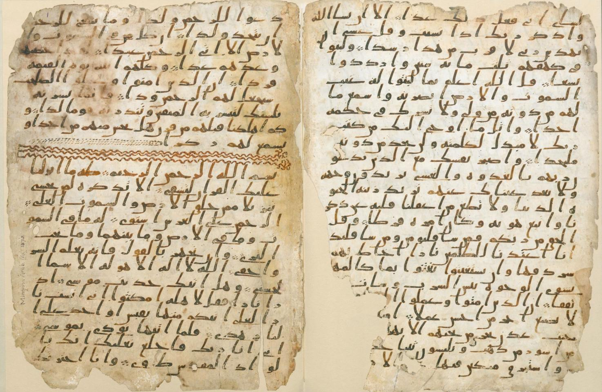

الإعجاز العلمي في القرآن الكريم هو مجال من الدراسات التي تهدف إلى استكشاف الروابط بين النصوص القرآنية واكتشافات العلوم الحديثة، حيث يحتوي القرآن على إشارات علمية دقيقة تتوافق مع ما توصل إليه العلم بعد قرون من نزول الوحي. يعزز هذا الاعتقاد مفهوم أن القرآن كلام الله سبحانه الذي أحاط علمًا بكل شيء، مما يجعل هذا المجال أحد أوجه إعجاز القرآن الكريم الذي أثبت بلاغته وتحديه للعقول عبر القرون.
تعريف الإعجاز العلمي:
يُعرف الإعجاز العلمي بأنه توافق الحقائق العلمية المكتشفة حديثاً مع ما ورد في القرآن الكريم حين نزل، دون أن يكون معروفًا لدى البشر في ذلك العصر، مما يدل على مصدر الوحي الإلهي الذي لا يمكن أن يصدر عن بشر عاشوا في زمن بعيد عن هذه الاكتشافات. هذا المفهوم نشأ من فكرة أن الله سبحانه قد أخبر في القرآن عن حقائق علمية كان من المستحيل للبشر في ذلك الوقت إدراكها أو معرفتها.
أهمية الإعجاز العلمي:
الإعجاز العلمي يساهم في تعزيز الإيمان لدى البعض، حيث يرون فيه إثباتًا على شمولية القرآن وإحكامه. ومع ذلك، فإن التعامل مع هذا الجانب يتطلب الدقة العلمية والمنهجية، إذ ينبغي أن تُبنى هذه الاستنتاجات على حقائق علمية ثابتة، بعيدًا عن التأويلات المبالغة أو النظريات غير المستقرة.
الإعجاز العلمي في القرآن الكريم
الإعجاز العلمي في القرآن الكريم يُشير إلى الآيات التي تحمل إشارات لحقائق علمية لم تُكتشف إلا في العصور الحديثة. حيث يتناول القرآن الكريم مختلف الظواهر الطبيعية والكونية، ويعرضها بطريقة لم تكن معروفة أو ممكنة المعرفة للبشرية في زمن النبي محمد صلى الله عليه وسلم. يُعتبر هذا النوع من الإعجاز دليلاً قوياً للمسلمين على صدق الوحي وأن القرآن ليس من نتاج البشر بل من عند الله، الذي أحاط علمه بكل شيء.
أهداف الإعجاز العلمي في القرآن
الإعجاز العلمي ليس مجرد عرض لمعلومات علمية، بل يهدف إلى تحقيق أهداف أعمق وأكثر جوهرية، منها:
تعميق الإيمان: يهدف إلى تعزيز الإيمان بالله من خلال توضيح أن القرآن، منذ أكثر من 1400 عام، سبق البشرية إلى حقائق لم تُكتشف إلا حديثاً. عندما يدرك الإنسان مدى دقة الوصف القرآني، يدرك عظمة الخالق وصدق الرسالة.
الرد على الشكوك: يستخدم الإعجاز العلمي في مواجهة الإلحاد والمادية، حيث يُظهر أن العلم الحديث لا يتعارض مع النصوص الدينية، بل يؤكد عليها، مما يعزز قيمة القرآن ككتاب هداية وعلم.
تشجيع البحث العلمي: يشجع الإعجاز العلمي المسلمين على التفكر والبحث في خلق الله، إذ أن القرآن يحث على التفكر والتدبر في الكون.
التفسير العلمي مقابل التفسير الديني
يُعتبر الإعجاز العلمي في القرآن من أكثر المجالات حساسية وتحدياً، حيث يعتمد على فهم النصوص القرآنية في سياقها الصحيح، مع مراعاة أن القرآن ليس كتاب علم بالمعنى التجريبي، بل كتاب هداية. بعض العلماء يحذرون من المغالاة في تأويل القرآن وفقاً للاكتشافات العلمية؛ لأن هذه الاكتشافات قد تتغير مع الزمن، بينما يبقى النص القرآني ثابتاً. لكن من الناحية الأخرى، يبقى الإعجاز العلمي أداة مفيدة للتأمل في النص القرآني.
أثر الإعجاز العلمي على المسلمين والمجتمع العلمي
ساهم الإعجاز العلمي في تعزيز مكانة القرآن لدى الكثير من المسلمين، كما شجع على المزيد من البحث العلمي والاكتشافات. أيضاً، أبدى بعض العلماء اهتماماً كبيراً بما ورد في القرآن من إشارات علمية، معتبرين أنه دليل على وجود إله خالق يتمتع بعلم غير محدود. ومع ذلك، فإن الفهم العلمي للإعجاز يجب أن يكون مصحوباً بالحذر والتروي
معجزة حفض القرآن
الحمد لله الذي نزَّل الكتاب هداية ورحمة للعالمين، وجعل فيه أسرارًا ومعجزات تتجلى للناس عبر العصور. بفضل الحفظ الإلهي، بقي القرآن الكريم على حاله منذ نزوله على النبي محمد صلى الله عليه وسلم، دون تغير هذه الآية تدل على(سورة الحجر: 9) {إِنَّا نَحْنُ نَزَّلْنَا الذِّكْرَ وَإِنَّا لَهُ لَحَافِظُونَ}. أو تحريف. يقول الله تعال أن الله تعالى قد تكفّل بحفظ القرآن من أي تغيير، ليبقى هداية دائمة للناس كافة
تفسير الآيات ومعانيها:
يتأمل المسلم اليوم في آيات الله التي قد لا يكون الصحابة رضوان الله عليهم قد أدركوا كُنهَ معانيها العلمية والتاريخية، إذ كانت تلك المعاني تنتظر الكشف مع تقدم العلوم.
إعجاز القرآن في حفظه :
جميع الكتب السماوية السابقة تعرضت للتحريف أو الفقدان، بينما بقي القرآن محفوظًا في الصدور و السطور رغم تعدد الروايات و القراءات
دعوة للتأمل :
القرآن ليس مجرد نص ديني بل معجزة عقلية وعلمية تتحدى الزمان والمكان. يحثنا الله في كتابه على التفكر في خلق السماوات والأرض وما فيهما، مما يُظهر للعقل البشري دلائل القدرة الإلهية.
بارك الله لنا في هذا الكتاب وجعلنا من أهله العاملين به.
مخطوطة القرآن بجامعة برمنغهام عُثر عليها في جامعة برمنغهام عام 2015؛ وتضم تلك المخطوطة صفحتين من القرآن الكريم، من سورتي الكهف وطه، مكتوبتين بالخط الحجازي. استخدم الخبراء في علم المخطوطات مسارع جامعة أكسفورد الإشعاعي والذي يحلل عمر المخطوطات بواسطة عنصر الكربون المشع، وتبيّن أن عمرها يبلغ نحو 1370 عاماً واستنتج أن المخطوطة قد دونت في فترة السنوات 568-645 م، مع العلم أن فترة نبوة النبي محمد قد كانت بين السنوات 610-632 م، وهذا يعني أن المخطوط دون من قبل شخص عاصر النبي محمد وعاش معه. أو ربما بعد الهجرة النبوية بـ 70 عامًا، وهو ما يجعلها من أقدم نسخ المصحف في العالم.
#cite_note) -1مخطوطة_القرآن_بجامعة_برمنغهامhttps://ar.wikipedia.org/wiki/)
وقد صرح البروفيسور ديفيد توماس، أستاذ الأديان في جامعة برمنغهام، لصحيفة "وول ستريت جورنال" (The Wall Street Journal) بأن المخطوطات القرآنية، خاصة تلك التي تمتلكها جامعة برمنغهام، الأقدم في العالم بأسره، تعد دليلًا دامغًا على أن القرآن بنسخته الحالية هو نفسه الذي كان يتداوله أصحاب النبي محمد صلى الله عليه وسلم ويحفظونه، وأنه لم يتعرض للتحريف.

{قُلْ لَئِنِ اجْتَمَعَتِ الإِنْسُ وَالْجِنُّ عَلَى أَنْ يَأْتُوا بِمِثْلِ هَذَا الْقُرْآنِ لا يَأْتُونَ بِمِثْلِهِ وَلَوْ كَانَ بَعْضُهُمْ لِبَعْضٍ ظَهِيرًا} (الإسراء: 88).
اللهمّ هذا هو الحقّ من عندك، أسلمت إليك لا إله إلاّ أنت، نسألك أن تثبّت قلوبنا على ذلك في الحياة الدنيا وفي الآخرة، وأن تنوّر صدورنا بنور القرآن الكريم، وتوفقنا للعمل به وتعليمه.
اللهمّ أفق أمّتنا من غفلتها عن كتابك العظيم، واهدها للعودة إليه والتمسك بهديك، حيث انصرفت عنه واتجهت إلى من لا يرجى منهم إلاّ الخسران.
اللهمّ تقبّل مني هذا الجهد القليل، واجعله خالصًا لوجهك الكريم، وانفعني به في الدنيا والآخرة، واجعله في ميزان حسناتي، وانفع به المسلمين أجمعين.